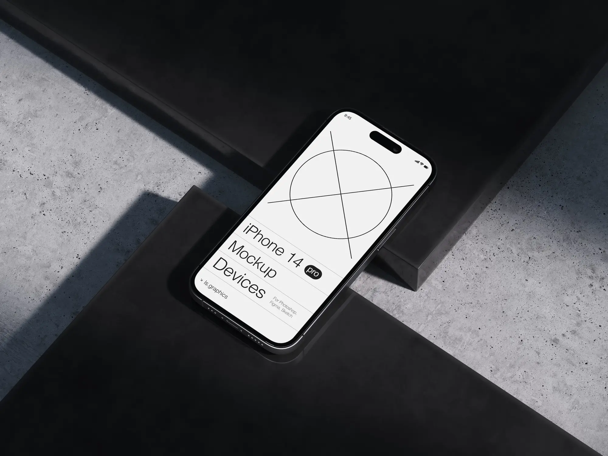

case study · 3 min read
Fitness Tracker App Revamp
Transforming daily workout logging, biometric health metrics, and long-term habit formation through intuitive visual feedback.

Problem statement
Overcoming tracking fatigue in everyday fitness apps
Most fitness applications fail not because of missing features, but because manual logging creates friction. When users find logging workouts cumbersome, they drop off after 2 to 3 weeks.
The goal: minimize the time between starting a workout and logging sets, while presenting complex health metrics in accessible, celebratory visuals.
The metrics in scope included heart rate variability, calorie burn rate, and sleep recovery.
Solutions & impact
Frictionless logging & personalized recovery insights
- 1-Tap Quick Start: Predictive workout routines based on day of week and past history.
- At-a-Glance Recovery Score: Consolidated sleep, rest, and activity data into a single readiness indicator.
- Micro-Celebrations: Visual feedback loops and achievement badges that reward streak consistency.